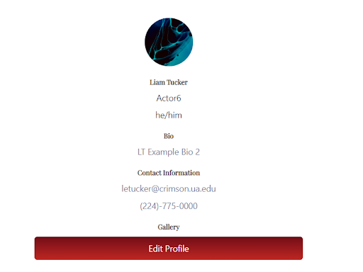
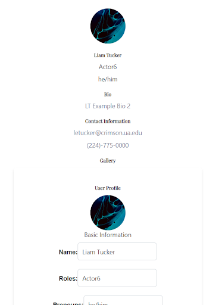
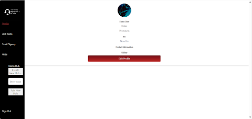

The Stage Manager's Book is an app dedicated to enhancing the efficiency of stage management by providing a fully digital platform for productions while also contributing to environmental sustainability.
The following is a list of the features that are currently implemented:
- Profiles: Each user can create a public profile to share their headshot, bio, and resume with others.
- Script: Each production's director can upload a script, which they (and authorized users) can annotate. All other members of the production can view these annotations in real-time.
- Hubs: Any user with an account is able to create a hub, and is automatically made admin of the hub.
- Hub Resources: Members of the hub are able to upload certain filetypes (.jpg, .png, .mov, .mp4, .pdf) to be viewed by other members of the hub.
- Hub Designer: Members of the hub can upload and share design files (.jpg, .png, .mov, .mp4, .pdf, .dwg, .dwf, .dxf) in this tab.
- Hub Admin Control: Owners of a hub are able to admit, kick, and ban users, along with editing a hub's name and description.
The following is a list of features that remain on the backlog:
- Chat: Members of a production can send each other private direct messages.
- Discussion: This will function as a public discussion forum; all members of the crew can make and reply to posts here.
- Notifications: Users will receive a notification via email or text when a hub they are a member of has a new notification.
- Role Based Access Control: Members of a hub will have roles attached to their hub profiles, which will restrict access to certain subpages.
- Calendar: Each hub will have its own calendar with important dates, such as rehearsals and showtimes.
- Memories: Each hub will have a subpage dedicated to pictures and videos to commemorate a production, and will be viewable once a hub is deactivated.
Documentation Guide for The Stage Managers Book
Table of Contents
- For Users
- Create an Account
- Edit Profile
- Create a Hub
- Edit a Hub
- View a Hub
- Join a Hub
- Join a Hub
- FAQs
- For Developers
- How to Install
- How Each Feature Works
- External Resources
- How to Make Changes
- Project Backlog
- Bug List
- Automated Testing
- Style Guide
- Credits
For Users:
Create an Account
- Go to the main webpage.
- Click the Stage Managers Book logo in the upper left-hand corner of the screen.
- Click the "Sign Up" link under the sign-in fields.
- Enter your name, email address, and password. Your email address must be valid, and your password must adhere to the specifications on screen. Click “Sign up”. You will be redirected to the main page.
- To log in: Enter your email address and password from the newly created account and click “Sign in”. You will be redirected to your profile page. Your email address and name should appear on screen.
Edit Your Profile
- Go to the profile page. This can be accessed from anywhere on the site by clicking on “Profile” from the navbar on the left. See Image 1.
- Click “Edit Profile”. In addition to your profile at the top of the screen, a form with your current profile information will appear. Enter your desired public profile information and click “Save Changes”. You will see the original profile page, without the form. Refresh the page, and you will see your new profile. See Image 2.


Create a Hub
- From any page, hover over the word “Hubs” on the sidebar to the left. See Image 3. Click on the “Create a Hub”. You will be redirected to a page to enter a hub name and description.
- Enter your hub's name and description. These will both be visible to every member of a hub. Click submit. You will be redirected to the home page for your newly created hub.

Edit a Hub
- In your hub, click the button at the bottom of the page entitled 'Admin Access'.
- Navigate to the bottom left hand side of the page, and enter a new name and description.
- Click submit. Your hub is now updated with the new information.
Note: You can only edit hubs that you are the owner of.
View a Hub
- From any page, hover over the word “Hubs” on the sidebar to the left. Click on the name of the hub you would like to navigate to. You will be redirected to the home page for this hub.
Join a Hub
- The Stage Manager for a hub must navigate to the home page of the hub.
- The Stage Manager should click the “admin access” on the bottom right. They will be redirected to the admin access page. Distribute the “Hub Access Code” on the top left of the screen to any users hoping to join the hub.
- The New User should, from any page on the project, hover over the “Hubs” button on the left side of the screen and enter the new access code into the designated box.
- The Stage Manager should navigate to the “admin access” page for a hub. They On the top left of the screen, they will be prompted to “accept” or “decline” the user. Select Accept.
- The New User, after refreshing their page or logging in again, should hover over “Hubs”. They will be able to click on and view the hub.
Access Hub Files
Resources and Designer
- From the designated hub, click on the “Resources” or “Designer” button on the bottom. You will be redirected to the respective page.
- To upload a file, select “Choose File”, select the file to upload, and then click “Upload”. Upon refreshing the page, this newly uploaded file will appear.
- To delete a file, click on the “Delete” button next to the filename
- To download a file, click on the filename.
Scripts
- From the designated hub, click on the “Script” button on the bottom of the screen. You will be redirected to the Script page.
- To upload a script, select “Choose File”, select the file to upload, and then click “Upload”. Upon refreshing the page, this newly uploaded file will appear.
- To view a script, click on the script name. The script will be pulled up in the pdf viewer window.
- You can highlight or draw on the script from the pdf viewer window. You can download the file (with any annotations) using the save button in the top corner of the pdf view. For these annotations to persist, delete the old script and upload the annotated script.
Frequently Asked Questions
How do I create an account?
To create an account, simply click on the "Don't have an account? Sign-up" link on the sign-in page below the "Sign-in" button. This will redirect you to the account creation page.
You will need to provide your full name, email address, and a password. Ensure that the password meets our specified criteria and is entered twice for confirmation.
Your password must meet certain criteria to ensure security. It includes a minimum of eight characters in length, a mix of uppercase and lowercase letters, and at least one number and special characters. This criteria is outlined on the account creation page.
How do I create a new hub for my production?
Once logged in, navigate to the side panel and select “Create New Hub.” Enter the required information about the production, such as name and description. After creating the hub, you can invite cast and crew members by sending the access code to their emails, allowing them to join and participate in the fun!
Are there any restrictions on uploading scripts and images to a hub?
Yes, files must be in supported formats (e.g., PDF for scripts, JPEG or PNG for images) and should not exceed the size limit of 25MB per file. Make sure your files are correctly formatted and named before uploading. If you encounter errors during upload, check your internet connection, file format, and file size and try again.
How can I update my user profile?
After logging in, you can update your profile information by navigating to the page. Scroll to the bottom and click the “Edit Profile” button. You can change details such as your contact information, bio, and profile picture. Make sure to save changes before exiting the page.
For Developers:
How to Install
Software Needed
Local Deployment
Cloning the repository
To clone the git repository, open a terminal and run the command git clone https://github.com/Bmfioresi/stage-managers-book.git.
This will download our project, which can be found here.
Environment Setup
For the sake of security, certain sensitive info and protected global variables are not included in the repository, and will need to be added manually.
In the /server directory, create a file called .env with the following contents, replacing the terms in brackets with your info.
MONGODB_USERNAME=[your MongoDB username]
MONGODB_PASSWORD=[your MongoDB password]
MAX_ATTEMPTS=[N]
LOCKOUT_TIME=[N]
Without this file, the web app will not be able to access the database, and will not function properly.
Server
The server, located in the /server directory, is a Node.js application built with Express.js.
To install the dependencies, navigate to the /server directory and run the command npm install in the console.
This command installs the dependencies needed for the server to run properly.
The dependencies are detailed in the package.json file.
This command will generate a folder called node_modules, which contains the dependencies' files.
If there are any issues with the installation of dependencies, see the FAQs for assistance.1
To start the server, run the command npm run dev.
This will start the server on localhost:8000 and run it in the background.
Client
The client, located in the /client directory, is a Node.js application built with React.js
Similarly to the server, you will need to run npm install in the /server directory.
This will install the dependencies specific to the client in its respective node_modules folder.
To start the client, run the command npm start in the /client directory.
This will start the client on localhost:3000 and open it in your default browser.
Remote Deployment
Docker
Unfortunately, we were not able to complete the process of setting up this project using docker.
What follows is a discussion of what we have implemented, the expected behavior, and how a docker works.
A docker is an efficient way of containerizing a project. This directory contains a file called docker_compose.yml, which could be used to create three containers: client, server, and mongo-db.
Both client and server directories contain a file called Dockerfile, which define the creation of their respective containers.
Each container encompasses a different part of the container. In the docker_compose.yml file, a number of different parameters are specified for each container:
container_name: the name of the container being builtbuild: how to construct the containerrestart: when frequently the container should be builtenvironment: environment variablesports: port mappings from intrenal to external. A port mapping will generally take the form 0.0.0.0:3000:8000, where the left side contains the server IP address and port and the right side contains the corresponding port being used in the codenetworks: any networks to which a container belongs. This is necessary to allow communication between different containers. depends_on: what order the containers should be constructed inimage: the docker image used to build the containervolumes: where data should be saved for persistence
These docker files are designed specifically to run on a server created for this class.
To run the application using docker, one must run docker compose build from the root directory of the project, and then docker compose up -d to begin running the project.
At this point, the app can be accessed from any browser at http://cs495-spring2024-13.ua.edu or http://cs495-spring2024-13.ua.edu:80.
To view currently running containers, run docker ps. To stop the containers from running, run docker compose down.
We believe that the reason why the dockerfiles in this project do not function properly relates to our decision to use React for the frontend.
Our server does not receive any post requests from the frontend. We have been unable to determine a solution to this problem.
How each feature works
Accounts Functionality
Create Account
Description: This feature allows users to create a new account with their personal information.
How to Use: Users can access the account creation page through the "Sign Up" link on the login page of the website. They need to fill out the required fields such as name, email, and password, and then submit the form to create their account.
Once the user makes their account, they are taken back to the login page to login to their newly created account.
Links to Other Functions: This function interacts with the security features for data encryption, password hashing, and input sanitization to ensure secure account creation and updates.
Profile and Edit Profile
Description: This feature allows users to view their profile, which displays their name, roles, biography, contact information, profile picture and gallery.
How to Use: After a user logs in to their account, they are taken to their profile page. To edit the profile, click on the “Edit Profile” button which allows users to edit all the fields on their profile except for their profile picture and gallery (will be implemented in the future). The “Cancel” button on the editing form will make the form disappear.
Links to Other Functions: Data on the profile page is populated from the account creation page. Any edits made on the profile page update the corresponding data in the database. Upon saving changes, the profile page fetches and displays the updated information.
Sign In / Sign Out
Sign in
Allows Users to sign in to their accounts.
How to use: Users enter their email and password on the sign in page and click the "Sign in" button to access their account.
If a user attempts to sign in with invalid information 5 times, they will be blocked from signing in for 10 minutes.
Sign out
Allows users to log out of their accounts.
How to use: Users can sign out by clicking the "Sign Out" button located on the navigation bar.
Links to Other Functions: Signing in and out are essential for accessing secured areas of the website and interacting with personalized content. These functions are also linked to the security features for password hashing and session management.
Security Functionality
Data Encryption
Encrypts sensitive data to protect it from unauthorized access.
How it works: Data encryption is applied to sensitive user information such as passwords, ensuring that even if the data is intercepted, it remains unreadable without the decryption key.
Password Hashing
How it Works: Passwords are hashed using a secure hashing algorithm before being stored in the database. This ensures that even if the database is compromised, plaintext passwords cannot be retrieved.
Both data encryption and password hashing are linked to the accounts functionality by ensuring that sensitive user information, such as passwords, is securely stored and managed, enhancing overall account security.
Input sanitization
How it Works: Cleans and validates user input to prevent common security vulnerabilities such as NoSQL injection and protection against malicious HTML input.
Linked to various functionalities across the application. This prevents common security vulnerabilities, ensuring that user input data is clean and safe to process. This also indirectly supports features like profile editing.
Rate Limiting
How it Works: Rate limiting tracks user requests and blocks requests that exceed the defined limits.
Linked to user authentication and API endpoints, rate limiting prevents abuse and ensures fair usage of system resources, maintaining system stability and preventing potential attacks on authentication mechanisms and backend APIs.
How External Resources Are Incorporated: External resources such as security libraries or functions (validator library, bcrypt for password hashing, and rate limiting functions) are integrated into the backend codebase to enhance the security of the application.
Sidebar Functionality
Navigate Website
Provides navigation links to different pages of the website.
How to Use: Users can click on the sidebar links to navigate to specific sections such as hubs, profile, sign out, and email signup.
Display Hubs
Shows a list of hubs or communities within the platform.
How to Use: Users can view the list of hubs in the sidebar and click on a hub to access its details. They can also join a hub using a code.
Links to Other Functions: The sidebar functionality is linked to various sections of the website and enhances user navigation and accessibility.
Notifications Functionality
Email List Signup
Allows users to subscribe to email notifications from our app.
How to Use: Users can sign up for email notifications by filling out the email signup form on the website.
Links to Other Functions: Email list signup integrates with SendGrid to manage and send email notifications to subscribers.
Hubs Functionality
Display Members and Hub Info
Shows information about hub members and details about each hub.
How to Use: Users can navigate to the "Hubs" section and view the list of members and hub information.
Links to Subpages
Provides links to subpages or specific sections within each hub.
How to Use: Users can click on the subpage links in a hub to access related content or features.
Admin Page
Enables hub administrators to manage hub settings and members.
How to Use: Admins can access the admin page from the hub interface and perform actions like admitting/denying member requests, kicking/banning members, and updating hub information.
Links to Other Functions: The hubs functionality interacts with user accounts, security features, and notifications (e.g., sending notifications to hub members).
Resources / Designer Pages Functionality
File Uploads/Downloads
Allows users to upload and download files/resources.
How to Use: Users can upload files to share with others or download resources provided by the platform.
Scripts
Manages script uploads and displays script PDFs for users.
How to Use: Users can upload and download script files or view existing script PDFs on the scripts page.
Scripts can be edited by drawing/highlighting on the document and can be downloaded with the edits included.
Links to Other Functions: This functionality interacts with file storage systems, user accounts, and notifications [in the future].
How external resources are integrated
React (Frontend Library)
Used for building user interfaces.
Incorporated through component-based architecture for a modular and scalable frontend.
Axios (HTTP Client for Node.js)
Used for making HTTP requests to the backend.
Incorporated into frontend components to fetch and send data from/to the server.
SendGrid (Email API)
Integrated for sending marketing emails, notifications, and password reset emails (to be implemented).
Configured with API keys stored securely in environment variables for email functionality.
MongoDB (Database)
Used for storing user profiles, account information, and other application data.
Integrated into the backend to handle CRUD operations and ensure data persistence and reliability.
How to make changes
Fork our github repository
- Click here.
- In the top-right corner of the page, click Fork.
- Under "Owner," select the dropdown menu and click an owner for the forked repository.
- By default, forks are named the same as their upstream repositories, but you can name it whatever you'd like.
- Optional:
in the "Description" field, type a description of your fork.
select Copy the DEFAULT branch only.
- Click Create fork.
After installing Node.js and npm
Most of our files are split into two main folders: client and server. Client holds the frontend react.js files and server holds the backend node.js files.
To make changes, you can simply edit any of the files as you see fit, or create entirely new ones.To test your changes, open two terminals. Navigate to the client directory in one, and the server directory in the other.
Please see the 'How to Install' section if you run into any issues with packages, and for information on how to run the server and client.
Project backlog
Our project backlog is downloadable here.
Bug list
Major bugs include:
When you log in, the sidebar does not automatically refresh, which forces the user to refresh the page to join a hub and to view the hubs they are a member of.
The script viewer only properly displays on Edge, and displays a downloadable file on other browsers.
Attempting to join a hub when not logged in will add '-1' to the member join list and cause the admin page to be unloadable
In test cases, 'createTestDB' and 'destroyTestDB' does not properly wait for a response to run the test cases. Currently, there is a hardcoded delay of 1 second after loading or deleting the database.
Other potential issues:
You will want to refactor to a local mongodb database rather than relying on Atlas.
Styling and CSS will need to be refactored to be responsive using Bootstrap.
HIDs and UIDs must be integers; some of our code uses 'Number()' in certain locations because we were originally using strings. May cause unexpected results.
Automated Testing
We have created a series of automated test cases which can be run directly from the website. This file can be seen at /client/src/pages/unit-tests.js. Currently, there are 7 automated test cases, testing a variety of different portions of the project.
To run the test cases, you should start the app and naigate to localhost:3000/unit-tests. Unfortunately, we currently do not have a way for these unit tests to run if the app itself cannot run. There are two ways to run these test cases:
- Test One: click on the "Test" button next ton one test case to run only this test case
- Test All: click on the "Test All" button at the top of the screen to run all test cases. This will run all test cases simultaneously
When you begin to run a test case, you should see a loading icon next to the test case. When the test case has completed, this loading icon will be replaced by either a checkmark (indicating the test passed) or an x (indicating that the test did not pass). If a test did not pass, more details will be printed to the console.
Test cases access a database seperate from our production database. Thus, you can run each test case as many times as you'd like with no impact on production data. The script which is used to load the test database and which contains the specifications for the test database can be found at /server/test-db-functions.js
Style Guide
When modifying this code, please adhere to the following style guides:
- All frontend code should be stored the client subdirectory. All backend code should be stored in the server directory. Each contains their own package.json and package-lock.json files. Any packages which need to be installed must be listed in these files. A package should only be added to both package.json files only if it is required for both frontend and backend code.
- Server environment variables are located in server/.env. In addition to parameters and credentials, paths should be specified as environment variables for cleaner code. There may be locations throughout this code where base URLs are hardcoded; this is not ideal behavior.
- All console.log() statements created during testing should be removed from code or commented out before being pushed into the main branch of the project.
- lowerCamelCase should be used for variable names throughout our code.
- Filenames should consist of one or more words, written entirely in lowercase, and seperated by dashes. They should follow the form server.js or mongo-helpers.js.
- When a code block requires braces, the opening brace should appear in line with the if statement, function declaration, or other start of the block. The end brace should appear at the same indentation level as the start of the block.
- A seperate file should be created for helper functions if any of the following are true:
- They are thematically different from the context in which they are called.
- The same function is needed in two or more files.
- The set of helper functions includes four or more functions.
- The set of helper functions is longer than 50 lines of code.
- Error messages should reveal exactly what happened, unless this reveals information which poses a security concern.
- Unless otherwise specified, follow standard JavaScript naming conventions. These can be seen here.
Credits:
Hannah Brousseau: FAQs
Logan Brower: Documentation structure, How to make changes, Backlog, Bug list, For User section
Kaitlyn Bryant: How each feature works, External Resources
Ben Fioresi: How to install
Liam Tucker: Automated testing, style guide, For User section